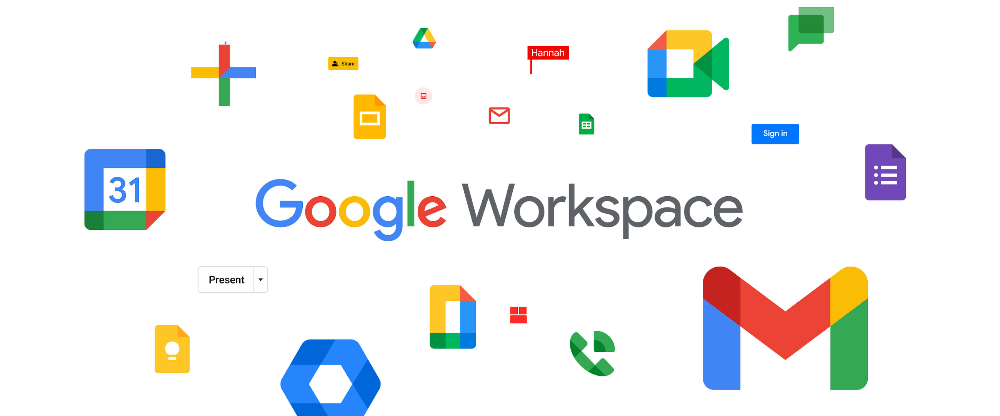
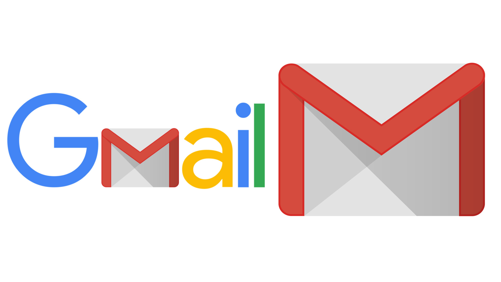
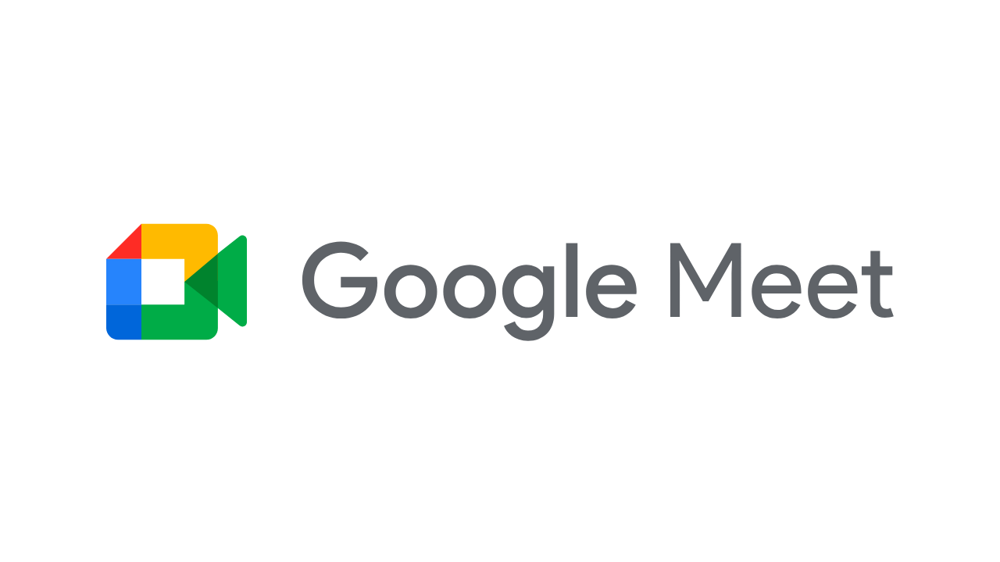
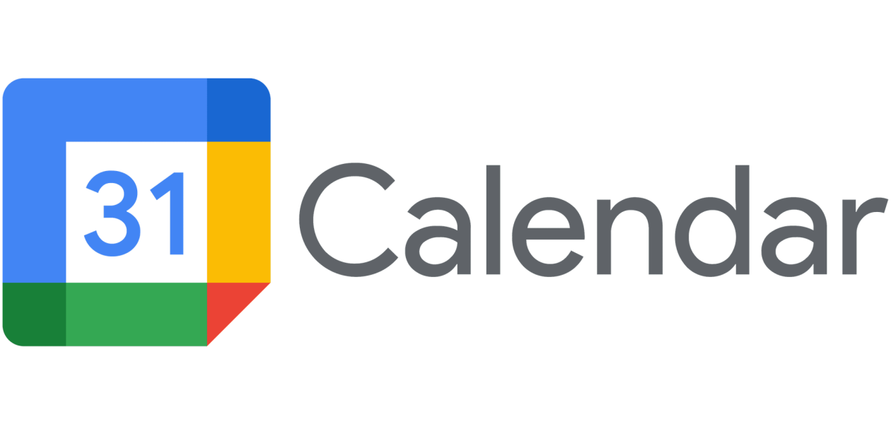
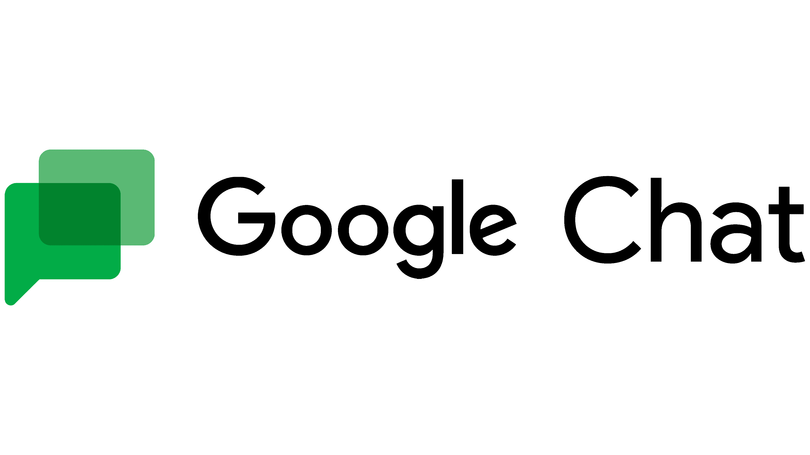
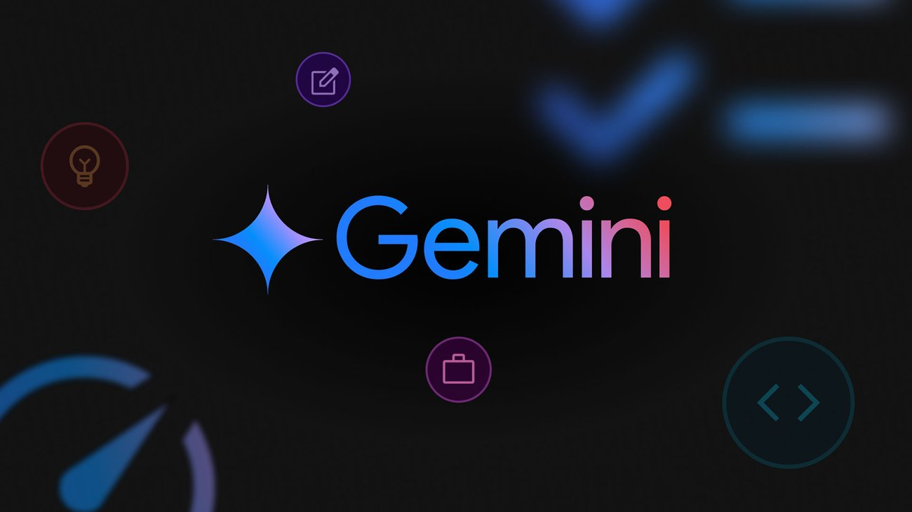
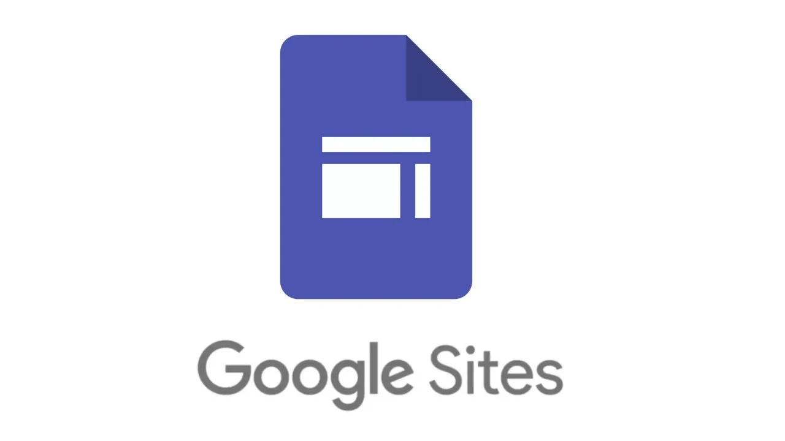
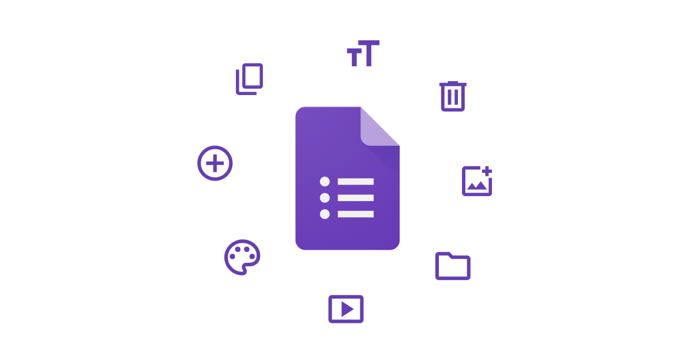

Općenito
Google Workspace je paket alata koji je napravio Google, a koristi se za bolje upravljanje poslovima i lakšu suradnju u firmama. U njemu su uključeni Gmail za e-mail, Google Drive za pohranu i dijeljenje dokumenata, Google Docs za pisanje i uređivanje tekstova, Google Sheets za izradu tablica, te Google Meet za videopozive i online sastanke. Sve ove aplikacije rade zajedno, što olakšava rad u timu, bez obzira na to gdje se nalaze članovi tima. Google Workspace se koristi na osnovi pretplate, a mnoge tvrtke ga koriste zbog njegove jednostavnosti i povezivanja s drugim Googleovim alatima.

Gmail
Gmail je besplatna usluga za e-mail koju je razvio Google, a koristi se širom svijeta za osobnu i poslovnu komunikaciju. Jedna od glavnih prednosti Gmail-a je jednostavno sučelje koje olakšava slanje, primanje i organiziranje e-mailova. Korisnici mogu pristupiti svom Gmail računu s bilo kojeg uređaja, bilo da je to računalo, mobitel ili tablet. Gmail nudi značajke poput filtriranja neželjene pošte, automatskog organiziranja e-mailova u različite mape i mogućnosti označavanja važnih poruka. Sve ove funkcionalnosti čine Gmail jednim od najpopularnijih i najpouzdanijih e-mail servisa na svijetu.
Pored toga, Gmail se besprijekorno integrira s drugim Googleovim alatima, poput Google Drive-a, Google Meet-a i Google Calendar-a, što omogućuje korisnicima jednostavno dijeljenje datoteka, organiziranje sastanaka i video poziva. Također, Gmail nudi velike količine besplatnog prostora za pohranu e-mailova i privitaka, pa korisnici ne moraju brinuti o brisanju starih poruka. Sigurnost je još jedan važan aspekt Gmail-a, jer nudi zaštitu od hakiranja uz dvofaktorsku autentifikaciju, što znači da je teško da netko neovlašteno pristupi računu. Uz sve ove prednosti, Gmail je postao osnovni alat za komunikaciju u mnogim aspektima života.
Glavne značajke Gmail-a:
- Besplatan je za korištenje i nudi veliki prostor za pohranu e-mailova i privitaka
- Jednostavno sučelje koje omogućuje lako slanje i primanje poruka
- Integracija s drugim Googleovim uslugama kao što su Google Drive i Google Meet
- Filtriranje neželjene pošte automatski premješta spam u posebnu mapu.
- Sigurnost putem dvofaktorske autentifikacije koja štiti korisničke račune

Google Drive
Google Drive je usluga za pohranu podataka u oblaku koju je razvila tvrtka Google. Omogućuje korisnicima pohranu različitih vrsta datoteka, poput dokumenata, slika, videozapisa i drugih, na internetu, čime se osigurava da su uvijek dostupne s bilo kojeg uređaja. Google Drive nudi besplatan prostor za pohranu, ali korisnici mogu kupiti dodatni prostor ako im zatreba više mjesta. Osim toga, korisnici mogu jednostavno dijeliti datoteke i mape s drugima, što olakšava suradnju na projektima i dijeljenje informacija.
Jedna od glavnih prednosti Google Drive-a je njegova integracija s drugim Googleovim aplikacijama, poput Google Docs, Google Sheets i Google Slides. To znači da možete stvarati, uređivati i dijeliti dokumente, tablice i prezentacije u stvarnom vremenu, bez potrebe za instaliranjem dodatnog softvera. Također, Google Drive omogućuje pristup datotekama s bilo kojeg uređaja koji ima internet, bilo da je riječ o računaru, mobitelu ili tabletu. Sve datoteke pohranjene na Google Drive-u automatski se spremaju na Googleovoj infrastrukturi, što znači da su sigurnosno zaštićene i lako dostupne u slučaju da izgubite svoj uređaj.
Google Drive nudi jednostavno korisničko sučelje koje omogućuje organizaciju datoteka u mape, pretraživanje sadržaja i brzu sinhronizaciju između uređaja. Osim toga, podržava automatsko spremanje svih promjena na dokumentima, što osigurava da nikada ne izgubite podatke. Također, Google Drive omogućuje rad i bez internetske veze, a kada se povežete s internetom, sve promjene će se automatski sinkronizirati.
Glavne značajke Google Drive-a:
- Besplatan prostor za pohranu s mogućnošću nadogradnje na veći prostor uz plaćanje
- Integracija s Googleovim aplikacijama kao što su Google Docs, Sheets, Slides i drugi, za jednostavno stvaranje i dijeljenje dokumenata
- Jednostavno dijeljenje datoteka i mapa s drugim korisnicima, što omogućava suradnju u stvarnom vremenu
- Sigurnost podataka zahvaljujući pohrani na Googleovoj infrastrukturi
- Pristup s bilo kojeg uređaja, kao što su računari, mobiteli i tableti, uz internetsku vezu
- Organizacija datoteka u mape i podmapa uz mogućnost pretraživanja
- Offline pristup za rad na datotekama bez internetske veze, uz kasniju sinkronizaciju

Google Meet
Google Meet je usluga za video konferencije koju je razvio Google. Omogućuje korisnicima da se povežu putem video poziva, što je idealno za online sastanke, nastavu, razgovore s prijateljima ili suradnju na daljinu. Google Meet nudi visoku kvalitetu videa i zvuka, a korisnici mogu sudjelovati u sastancima s više ljudi odjednom. Ova usluga je dostupna besplatno, ali Google nudi i dodatne funkcije putem svojih poslovnih paketa, koji omogućuju još veću kontrolu nad sastancima i naprednije opcije.
Jedna od glavnih prednosti Google Meet-a je integracija s drugim Googleovim uslugama, poput Google Calendar-a i Gmail-a. To znači da možete lako zakazivati sastanke i slati pozivnice izravno s tih aplikacija. Također, Meet podržava dijeljenje ekrana, što omogućuje korisnicima da pokažu prezentacije, dokumente ili čak svoju radnu površinu u stvarnom vremenu. Svi sastanci na Google Meet-u mogu se pohraniti na Google Drive, što olakšava pristup snimkama i bilješkama kasnije. Osim toga, Google Meet je siguran i koristi enkripciju za zaštitu podataka tijekom sastanaka.
Google Meet nudi jednostavno korisničko sučelje i mogućnost pristupa s različitih uređaja, uključujući računare, mobitele i tablete. Usluga je izuzetno jednostavna za korištenje, pa ne zahtijeva nikakvu instalaciju posebnog softvera (samo web preglednik ili aplikaciju). Meet također nudi opciju za pozivanje i povezivanje s korisnicima putem jedinstvenog linka, bez potrebe za stvaranjem računa, što ga čini pristupačnim i za korisnike koji nemaju Google račun.
Glavne značajke Google Meet-a:
- Visoka kvaliteta videa i zvuka koja omogućuje jasnu komunikaciju tijekom sastanaka
- Integracija s Googleovim aplikacijama poput Google Calendar-a i Gmail-a za jednostavno zakazivanje i slanje pozivnica
- Dijeljenje ekrana za pokazivanje prezentacija i dokumenata u stvarnom vremenu
- Sigurnost i enkripcija za zaštitu podataka i privatnosti korisnika
- Jednostavno korisničko sučelje koje omogućava lako povezivanje s drugim korisnicima
- Pristup s bilo kojeg uređaja, uključujući računare, mobitele i tablete, putem internetskog preglednika ili aplikacije
- Bez potrebe za posebnom instalacijom – samo kliknete na link za sastanak i odmah možete sudjelovati

Google Calendar
Google Calendar je aplikacija za upravljanje vremenom koju je razvio Google, a koristi se za planiranje i organiziranje dnevnih aktivnosti, sastanaka i događanja. Uz Google Calendar, korisnici mogu jednostavno zakazivati događaje, postavljati podsjetnike i dijeliti rasporede s drugima. Ova aplikacija omogućava korisnicima da vizualiziraju svoje obaveze u različitim formatima, poput dnevnog, tjednog ili mjesečnog pregleda. Također, korisnici mogu dodavati detalje poput opisa, lokacije, sudionika i obavijesti, čime se olakšava organizacija i praćenje obveza. Google Calendar automatski sinkronizira raspored na svim uređajima, bilo da koristite računalo, mobitel ili tablet, pa je uvijek moguće pristupiti svom kalendaru, bez obzira na to gdje se nalazite.
Jedna od najkorisnijih značajki Google Calendar-a je njegova integracija s drugim Googleovim uslugama. Na primjer, događaji mogu biti povezani s Google Meet-om, pa korisnici mogu jednostavno dodati link za videopoziv na sastanke, što olakšava organizaciju online susreta. Također, putem Google Calendar-a možete postavljati ponavljajuće događaje, kao što su tjedni sastanci ili rođendani, čime se štedi vrijeme na ponovnom unosu istih informacija. Google Calendar nudi i mogućnost zajedničkog kalendara, što je korisno za obitelji, timove ili organizacije koje žele uskladiti svoje obaveze. Osim toga, integracija s Gmail-om omogućuje automatsko dodavanje događaja u kalendar iz e-mailova, poput pozivnica na sastanke ili događanja.
Glavne značajke Google Calendar-a:
- Besplatan za korištenje i dostupan za sve korisnike Google računa
- Sinkronizacija na svim uređajima – promjene napravljene na jednom uređaju automatski se odražavaju na svim ostalim uređajima
- Postavljanje obavijesti i podsjetnika za događaje i zadatke
- Mogućnost dodavanja sudionika u događaje i dijeljenje rasporeda s drugim korisnicima
- Integracija s Google Meet-om za jednostavno dodavanje linkova za videopozive na događaje
- Ponavljajući događaji – lako možete postaviti događaje koji se ponavljaju na tjednoj, mjesečnoj ili godišnjoj bazi
- Različiti prikazi – možete birati između dnevnog, tjednog, mjesečnog ili godišnjeg pregleda svojih obveza
- Jednostavno dodavanje lokacija na događaje, što pomaže korisnicima da se snađu i dođu na pravo mjesto
- Zajednički kalendari za obitelji, timove ili organizacije, koji omogućuju lakše usklađivanje obveza među korisnicima
- Automatsko dodavanje događaja iz Gmail-a – pozivnice na sastanke i drugi relevantni događaji automatski se pojavljuju u kalendaru

Google Chat
Google Chat je aplikacija za slanje poruka i suradnju koja je dio Google Workspace paketa. Koristi se za timsku komunikaciju u stvarnom vremenu, što znači da možete brzo komunicirati s kolegama, prijateljima ili članovima obitelji. Osim što omogućuje slanje tekstualnih poruka, Google Chat nudi i mogućnost dijeljenja datoteka, slanja fotografija, linkova i drugih sadržaja. Aplikacija je usko povezana s ostalim Google alatima kao što su Google Drive, Google Docs, i Google Meet, čime olakšava zajednički rad na projektima, dokumentima i organizaciju video poziva. Ovaj alat je koristan ne samo za školu i posao, već i za svakodnevnu komunikaciju u manjim ili većim grupama.
Jedna od najvažnijih značajki Google Chat-a je njegova organizacija. Korisnici mogu stvarati različite kanale ili chat sobe za različite projekte, grupe ili teme. To znači da se sve poruke i informacije vezane uz određeni zadatak ili temu mogu držati na jednom mjestu. Također, Google Chat omogućuje pretragu starih poruka, što olakšava pronalaženje važnih informacija. Ova aplikacija nudi jednostavan i intuitivan dizajn, a korisnicima su na raspolaganju emotikoni, GIF-ovi i druge opcije koje komunikaciju čine zabavnijom i opuštenijom. Dostupan je na svim uređajima, uključujući mobilne telefone, što omogućava pristup s bilo kojeg mjesta i u bilo kojem trenutku.
Glavne značajke Google Chat-a:
- Brza komunikacija u stvarnom vremenu – Google Chat omogućuje slanje instant poruka, što olakšava brzu i učinkovitu komunikaciju među članovima tima
- Integracija s drugim Google alatima – Aplikacija je povezana s Google Drive-om, Google Docs-ima i Google Meet-om, omogućujući dijeljenje datoteka, uređivanje dokumenata i organiziranje video poziva
- Organizacija putem kanala i grupa – Moguće je stvarati kanale ili grupe prema projektima ili temama, što olakšava praćenje razgovora i zadataka
- Pretraživanje starih razgovora – Google Chat omogućuje pretragu prethodnih razgovora, što olakšava pronalaženje važnih informacija ili poruka
- Zabavna i opuštena komunikacija – Korištenje emotikona, GIF-ova i drugih opcija čini komunikaciju zabavnijom i opuštenijom
- Dostupnost na svim uređajima – Google Chat je dostupan na mobilnim uređajima i računalima, što omogućava pristup porukama bilo kada i bilo gdje

Gemini
Gemini je najnoviji umjetnički inteligentni sustav razvijen od strane Google-a, koji je dizajniran kako bi pomogao korisnicima u raznim područjima, od automatizacije zadataka do dubokih analiza podataka. Gemini koristi napredne modele strojne obrade jezika i dubokog učenja, čime omogućava razumijevanje, prepoznavanje i generiranje teksta na nevjerojatno visokom nivou. Ovaj sustav je osmišljen da integrira Googleove najbolje tehnologije i proširene mogućnosti umjetničke inteligencije, pružajući korisnicima brz i učinkovit način za interakciju s tehnologijom. Gemini se koristi u mnogim proizvodima i uslugama koje Google nudi, poput pretrage, glasovnih pomoćnika, personaliziranih preporuka i drugih AI-driven usluga.
Jedna od glavnih prednosti Gemini-a je njegova sposobnost da razumije kontekst u kojem se koristi. To znači da može pružiti precizne odgovore ili rješenja na temelju specifičnih korisničkih zahtjeva, uzimajući u obzir povijest interakcije i preferencije korisnika. Osim toga, Gemini je dizajniran da bude prilagodljiv i skalabilan, što znači da se može koristiti u različitim industrijama, uključujući obrazovanje, zdravstvo, financije i mnoge druge. S obzirom na svoju naprednu tehnologiju, Gemini ima potencijal značajno poboljšati produktivnost i efikasnost rada, kao i olakšati korisnicima obavljanje svakodnevnih zadataka.
Također, Gemini nudi snažne sigurnosne i etičke mjere, uzimajući u obzir privatnost korisnika. Google je u razvoju ovog AI sustava posvetio veliku pažnju etičkim pitanjima vezanim uz korištenje umjetničke inteligencije, poput sprječavanja pristranosti i osiguravanja transparentnosti u odlučivanju. Ove mjere omogućuju korisnicima da koriste Gemini sa sigurnošću, znajući da će njihovi podaci biti zaštićeni i da će interakcije s AI sustavom biti etički odgovorne. S obzirom na njegovu moć i svestranost, Gemini se brzo etablira kao ključna tehnologija u budućnosti umjetničke inteligencije i Googleovih proizvoda.
Glavne značajke Gemini-a:
- Napredna obrada jezika – Gemini koristi napredne modele za razumijevanje i generiranje jezika, omogućujući precizne i korisne odgovore
- Sposobnost razumijevanja konteksta – Gemini analizira specifičan kontekst korisničkih zahtjeva, čime daje personalizirane odgovore
- Integracija s Google proizvodima – Gemini je ugrađen u mnoge Googleove usluge, uključujući pretragu, glasovne asistente i preporuke
- Prilagodljivost i skalabilnost – Može se koristiti u raznim industrijama, uključujući zdravstvo, obrazovanje i financije
- Povećanje produktivnosti – Sposobnost automatizacije zadataka čini rad učinkovitijim i bržim
- Sigurnost i privatnost podataka – Google pridaje veliku pažnju zaštiti podataka korisnika i sigurnosti pri korištenju AI-a
- Etika u umjetnoj inteligenciji – Razvijen je s naglaskom na smanjenje pristranosti i transparentnost u donošenju odluka
- Podrška za personalizirane preporuke – Gemini omogućava prilagodbu usluga prema korisnikovim preferencijama
- Skalabilnost za velike sustave – Može se integrirati u velike sustave i koristiti za obradu velikih količina podataka
- Svestranost u aplikacijama – Gemini se može koristiti za širok spektar aplikacija, od automatizacije zadataka do analize podataka

Google Docs
Google Docs je besplatna aplikacija za obradu teksta koja se koristi putem internetskog preglednika, a nudi brojne prednosti korisnicima. Kao dio Googleovog paketa alata, Google Docs omogućava korisnicima da kreiraju, uređuju i dijele dokumente s drugim osobama u stvarnom vremenu. Jedna od glavnih prednosti ove aplikacije je to što je potpuno besplatna, a svi dokumenti se automatski pohranjuju u Google Drive, što znači da je moguće pristupiti dokumentima s bilo kojeg uređaja koji ima pristup internetu. Osim toga, Google Docs omogućava suradnju u stvarnom vremenu, što znači da više ljudi može raditi na istom dokumentu, a svi uredi mogu biti vidljivi u stvarnom vremenu.
Jednostavnost korištenja i mogućnosti za uređivanje dokumenta čine Google Docs vrlo popularnim alatom, kako među studentima, tako i među poslovnim korisnicima. Ovaj alat podržava osnovne funkcije poput uređivanja teksta, promjene fontova, ubacivanja slika i tablica, a nudi i napredne opcije kao što su dodavanje komentara i praćenje promjena. Pored toga, Google Docs je integriran s drugim Googleovim alatima poput Google Sheets i Google Slides, što olakšava prijenos podataka između aplikacija. Iako postoje mnogi slični programi, Google Docs izdvaja se svojim jednostavnim sučeljem i besplatnim pristupom svim korisnicima.
Glavne značajke Google Docs-a:
- Besplatan pristup – Google Docs je besplatan za sve korisnike s Google računom i omogućava kreiranje i uređivanje dokumenata bez potrebe za instalacijom dodatnog softvera
- Pohrana u oblak (Google Drive) – Svi dokumenti se automatski pohranjuju u Google Drive, što omogućuje pristupanje i uređivanje dokumenata s bilo kojeg uređaja koji ima internet vezu
- Suradnja u stvarnom vremenu – Više korisnika može istovremeno raditi na istom dokumentu, a svi mogu vidjeti promjene koje drugi unose u stvarnom vremenu
- Automatsko spremanje – Promjene koje napravite u dokumentu automatski se pohranjuju, što znači da nikada ne morate brinuti o gubitku podataka
- Komentiranje i praćenje promjena – Omogućava korisnicima dodavanje komentara u dokumente, kao i praćenje svih promjena koje su napravljene, što je korisno za suradnju i povratne informacije
- Jednostavno uređivanje i formatiranje – Google Docs nudi razne opcije za uređivanje teksta, uključujući promjenu fontova, veličine slova, boje i umetanje slika, tablica i veza
- Integracija s drugim Google alatima – Google Docs je povezan s drugim Google aplikacijama poput Google Sheets i Google Slides, što omogućava jednostavan prijenos podataka i stvaranje kompleksnih dokumenata
Google Sheets
Google Sheets je besplatan alat za izradu i uređivanje proračunskih tablica koji se koristi putem internetskog preglednika. Kao i Google Docs, Google Sheets omogućuje pohranu podataka u oblak putem Google Drive-a, što omogućava pristup proračunskim tablicama s bilo kojeg uređaja. Ovaj alat je savršen za organizaciju podataka, izračune i analize jer nudi širok raspon funkcija za rad s brojkama, tekstom i formulama. S obzirom na to da je zasnovan na oblaku, Google Sheets omogućava jednostavnu suradnju među više korisnika koji mogu istovremeno raditi na istoj tablici, mijenjati podatke i pratiti promjene u stvarnom vremenu.
Jedna od ključnih značajki Google Sheets-a je mogućnost integracije s drugim Googleovim alatima i vanjskim aplikacijama, što omogućava uvoz podataka iz drugih izvora ili dijeljenje tablica s timovima za zajednički rad. Alat podržava različite vrste formula i funkcija, uključujući one za računanje, filtriranje i analizu podataka, što ga čini korisnim ne samo za osnovnu organizaciju podataka, nego i za složene analize. Osim toga, korisnici mogu koristiti mogućnosti vizualizacije podataka kao što su grafovi i dijagrami, što olakšava predstavljanje informacija na jasan i razumljiv način.
Google Sheets također omogućava pristup svim dokumentima s bilo kojeg uređaja, što je idealno za rad u pokretu. Također, sve promjene koje napravite automatski se pohranjuju, čime se minimizira rizik od gubitka podataka.
Glavne značajke Google Sheets-a:
- Suradnja u stvarnom vremenu – Više korisnika može istovremeno raditi na istoj proračunskoj tablici, mijenjati podatke i pratiti promjene
- Formule i funkcije – Google Sheets podržava širok raspon formula za računanje, filtriranje i analizu podataka
- Integracija s drugim alatima – Alat se integrira s drugim Googleovim aplikacijama i vanjskim izvorima podataka
- Vizualizacija podataka – Omogućuje izradu grafova i dijagrama za jasnije predstavljanje podataka
Google Sites
Google Sites je besplatan alat za izradu web stranica koji je jednostavan za korištenje i ne zahtijeva prethodno znanje o programiranju. Ovaj alat omogućava korisnicima, bilo da su studenti, učitelji ili mali poduzetnici, izradu web stranica za različite svrhe. S Google Sites-om možete brzo kreirati web stranice za projekte, prezentacije, osobne portfelje ili interne stranice za suradnju u timu. Platforma nudi jednostavan "drag-and-drop" sustav koji omogućuje dodavanje sadržaja, slika, videozapisa i drugih elemenata bez potrebe za kodiranjem.
Jedna od glavnih prednosti Google Sites-a je njegova integracija s drugim Googleovim alatima poput Google Drive-a, Google Docs-a i Google Sheets-a. To znači da možete lako umetnuti dokumente, proračunske tablice, prezentacije i druge datoteke u svoje web stranice, čineći ih interaktivnijima i dinamičnijima. Ovaj alat također podržava uređivanje sadržaja u stvarnom vremenu, što znači da više korisnika može istovremeno raditi na istoj stranici i vidjeti promjene u realnom vremenu.
Google Sites je izuzetno prilagodljiv i nudi različite predloške koji vam pomažu da brzo započnete s izradom web stranice. Bez obzira na to želite li jednostavnu osobnu stranicu ili složeniju stranicu za poslovne potrebe, Google Sites pruža alate za dizajniranje stranica koje odgovaraju vašim potrebama. Također, mogućnost jednostavne promjene dizajna i strukture stranice čini ga idealnim za one koji žele stalno ažurirati i prilagođavati sadržaj.
Osim toga, Google Sites nudi visok stupanj sigurnosti, budući da su web stranice zaštićene Googleovim sigurnosnim protokolima. Korištenjem vašeg Google računa, možete kontrolirati tko ima pristup vašim stranicama i koje privilegije imaju (npr. samo za gledanje ili pravo za uređivanje). Ovaj alat je idealan za škole, organizacije ili timove koji žele postaviti internetske stranice za suradnju i dijeljenje resursa unutar sigurne platforme.
Glavne značajke Google Sites-a:
- Jednostavno kreiranje web stranica – Google Sites koristi "drag-and-drop" sustav za jednostavno dodavanje sadržaja i elemenata bez potrebe za programiranjem
- Integracija s Google alatima – Omogućava lako umetanje dokumenata, proračunskih tablica i drugih datoteka iz Google Drive-a, Docs-a i Sheets-a
- Kontrola pristupa i sigurnost – Pruža mogućnost kontrole tko ima pristup stranicama i osigurava zaštitu putem Googleovih sigurnosnih protokola

Google Forms
Google Forms je besplatan alat za izradu obrazaca, anketa i upitnika, koji je dio Googleovog paketa alata. Korisnici mogu jednostavno kreirati obrasce za prikupljanje podataka, bilo da se radi o anketama, prijavama ili evaluacijama. Jednostavan je za korištenje i ne zahtijeva nikakvo prethodno tehničko znanje. Uz razne predloške i opcije za prilagodbu, Google Forms omogućava brzo stvaranje obrazaca koji mogu sadržavati različite vrste pitanja, poput višestrukih izbora, tekstualnih odgovora, skale i drugih
Jedna od glavnih prednosti Google Forms-a je mogućnost automatskog prikupljanja odgovora i njihovo pohranjivanje u Google Sheets. Tako možete lako pratiti i analizirati rezultate, a podaci se automatski ažuriraju u stvarnom vremenu. Također, Google Forms nudi mogućnost postavljanja logičkih uvjeta, što znači da možete prilagoditi tok pitanja ovisno o odgovorima koje korisnik daje, čineći obrazac interaktivnijim i personaliziranim
Google Forms također omogućuje dijeljenje obrazaca s velikim brojem ljudi i postavljanje opcija za prikupljanje anonimnih odgovora. To je korisno za obrazovne svrhe, istraživanja tržišta, prijave na događaje ili internetske registracije. Također, rezultati mogu biti vizualizirani putem grafikona, što olakšava analiziranje podataka. S obzirom na to da je integriran s Google računom, svi podaci su sigurni, a obrazac se može lako dijeliti putem e-pošte ili poveznice.
Glavne značajke Google Forms-a:
- Jednostavna izrada obrazaca – Google Forms omogućava brzo i jednostavno stvaranje anketa, obrazaca i upitnika bez potrebe za tehničkim znanjem
- Automatsko pohranjivanje podataka – Odgovori na obrasce automatski se pohranjuju u Google Sheets za lakšu analizu
- Prilagodba s logičkim uvjetima – Omogućuje postavljanje logičkih uvjeta za prilagodbu pitanja na temelju prethodnih odgovora
- Mogućnost anonimnih odgovora – Omogućava prikupljanje anonimnih podataka za veću privatnost korisnika
- Podrška za različite vrste pitanja – Uključuje pitanja poput višestrukih izbora, tekstualnih odgovora, skale i drugih
- Vizualizacija rezultata – Odgovori mogu biti prikazani u obliku grafikona, što olakšava analizu podataka
- Brzo dijeljenje obrazaca – Obrasci se mogu lako dijeliti putem poveznica ili e-pošte
- Sigurnost podataka – Kao i ostali Google alati, Google Forms osigurava zaštitu podataka korisnika putem sigurnosnih protokola
